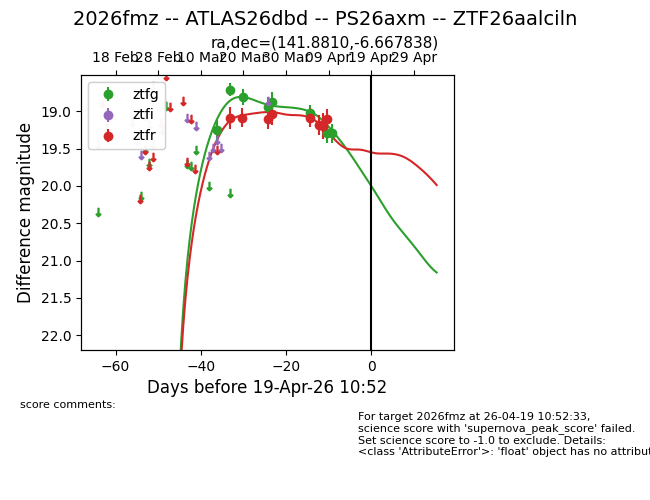
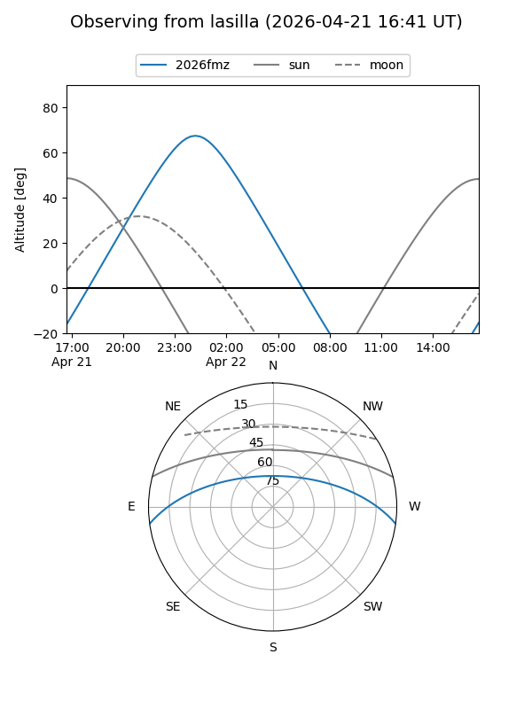
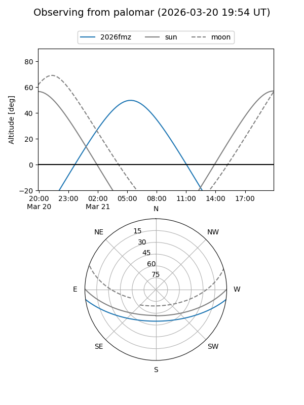
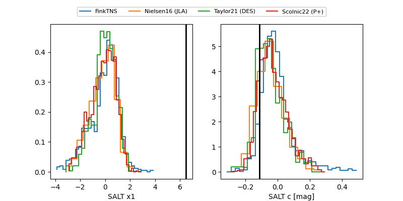

2026fmz
Target 2026fmz at 2026-04-19 11:03
Aliases and brokers:
FINK: link
Lasair: link
ALeRCE: link
TNS: link
YSE: link
alt names
ZTF26aalciln (ztf,fink_ztf)
2026fmz (tns,yse)
ATLAS26dbd (atlas)
PS26axm (panstarrs)
Coordinates:
equatorial (ra, dec) = 141.8810,-6.66784
equatorial (HMS+DMS) = 09:27:31.44,-06:40:04.22
galactic (l, b) = (239.6550,+30.23922)
Flags:
Photometry:
last ztfg=19.29, ztfr=19.10
8 ztfg, 8 ztfr detections
Lightcurve

Visibility


Additional plots
